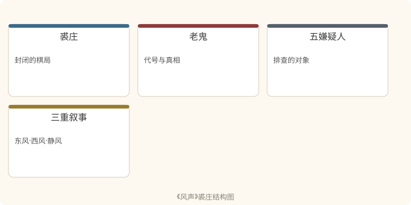

风声
一、基本信息
| 作者 | 麦家 |
|---|---|
| 成书/出版 | 出版年份待核（中国作家网 C026：'出版《解密》《暗算》《风声》《人生海海》等七部长篇小说'；2007年说通说待核） 麦家（中国作家网会员页）（官方文学机构） |
| 国别/地区 | 中国 |
| 时代 | 现当代 · 当代 |
| 体裁 | 长篇小说 |
| 语言 | 汉语（白话） |

《风声》裘庄结构图（主题·结构图）
二、创作背景
中国作家网会员页（C026）：'出版《解密》《暗算》《风声》《人生海海》等七部长篇小说'——本作为其中之一。
题材（通说待核）：日占时期裘庄的'老鬼'排查——代号'老鬼'的地下党情报员。
三、内容脉络
裘庄闭门排查：五个嫌疑人（通说待核）。
'东风/西风/静风'三重叙事（结构通说待核）。
四、主要人物表
| 人物 | 身份 | 说明 |
|---|---|---|
| 李宁玉 | 译电员 | '老鬼'（通说待核） |
| 顾小梦 | 译电员 | 对手（通说待核） |
五、主题与艺术特点
- 密室的推理与信仰（通说）。
- 极端情境下的人性（通说）。
- 谍战叙事的文学化（通说）。
六、影响与评论
- 中国作家网会员页：列入麦家七部长篇（C026）。
麦家（中国作家网会员页）（官方文学机构） - 2009年电影改编（陈国富/高群书——通说待核）。
麦家（中国作家网会员页）（官方文学机构）
七、阅读建议
难点
- 密室推理的层层反转。
- 历史语境。
- 《风声》（人民文学出版社，通说待核）。
《解密》→《暗算》→《风声》。
八、待核实
- 2007年《人民文学》刊出与10月出版说核对。
- 李宁玉/顾小梦人名核对。
- '东风—西风—静风'结构核对。
本页主要来源
麦家的其他收录作品：暗算